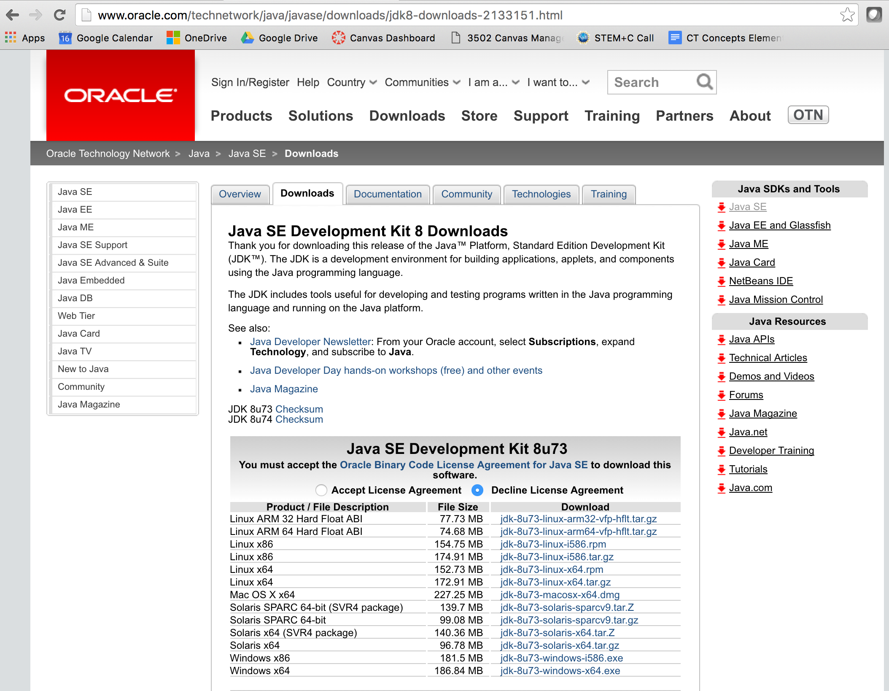

Click "Create account" and follow the directions for setting up a new Gmail account.
Java
You need an up-to-date version of Java to use Ascend (for PC/Mac users: at least Java SE 7; for Linux users: at least Java SE 8).
If you do not have an up-to-date version of Java, follow the instructions below.
Under Java SE Development Kit 8u74 (or alternatively a more up-to-date version, if available):
Click to "Accept License Agreement"
Click the download link that is appropriate for your operating system

Eclipse
You need Eclipse version name Luna or later to use Ascend.
Windows User: Windows 10 users should use Eclipse Neon. Pre-Windows 10 users (7 or 8) should use Eclipse Mars.
If you do not already have this, follow the directions below to download the latest version of Eclipse.